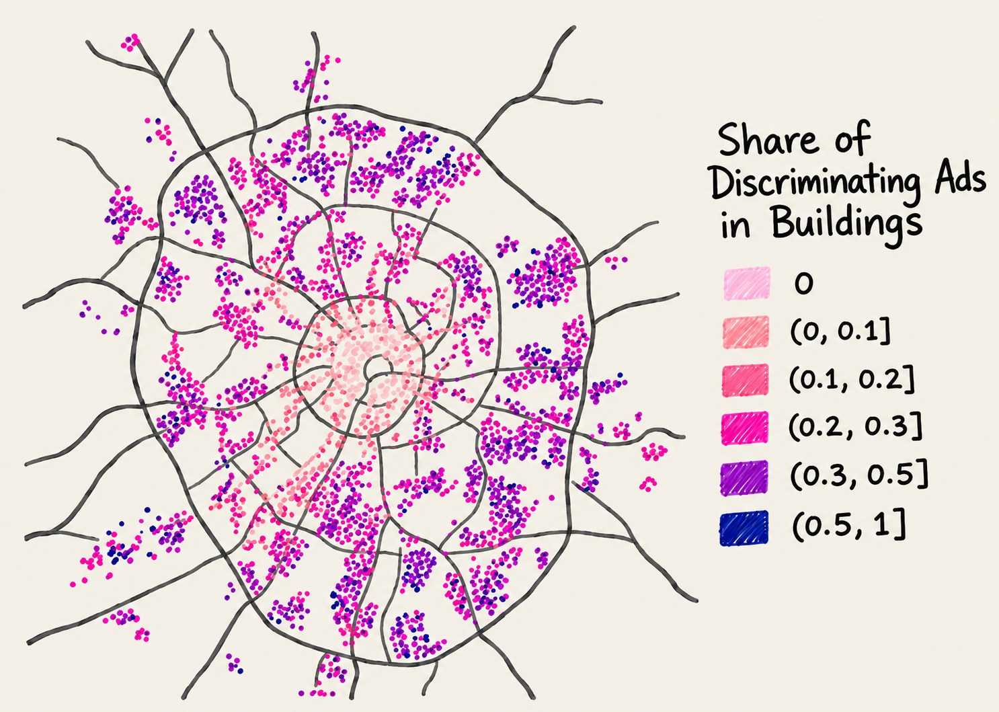

Slavs Only: Overt Discrimination and Racial Disparities in Rental Housing
Revise and Resubmit at the Journal of Urban Economics · July 2026
Abstract
Discriminatory behaviour is difficult to observe, let alone quantify. In Moscow’s rental market, however, landlords openly state racial requirements: we find that 20% of listings include explicit ethnic criteria. Using a novel high-frequency dataset, we show that listings with overtly discriminatory language (e.g., “Slavs only” or “Russians only”) are 4% cheaper than comparable apartments in the same building. A complementary correspondence experiment reveals that both overt and subtle forms of discrimination coexist and amplify each other: minority-sounding applicants receive significantly fewer responses, especially when listings contain explicit bias. Our findings indicate that landlords are willing to bear economic costs to exclude racial minorities, directly linking prejudice to price differentials.